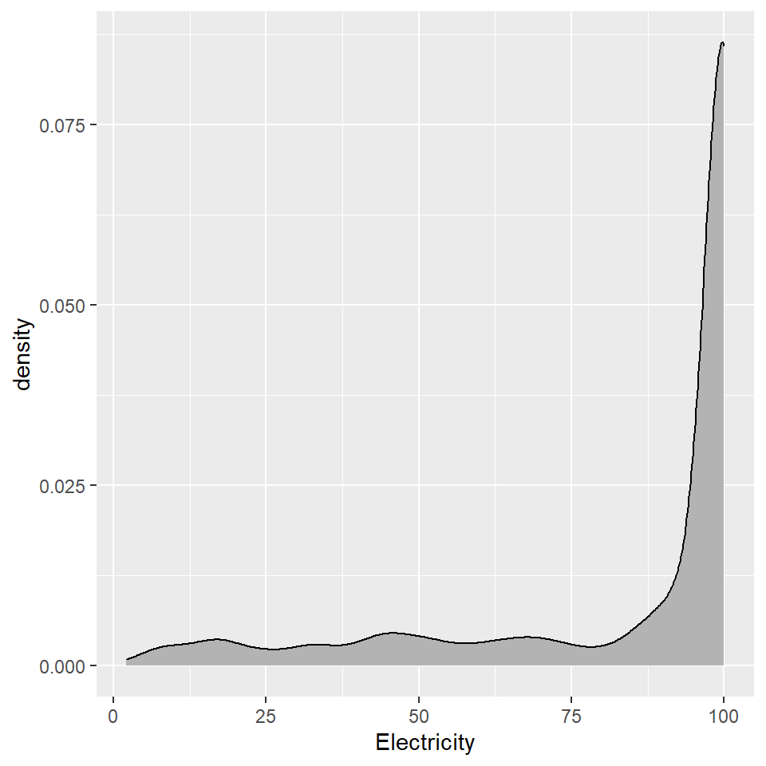
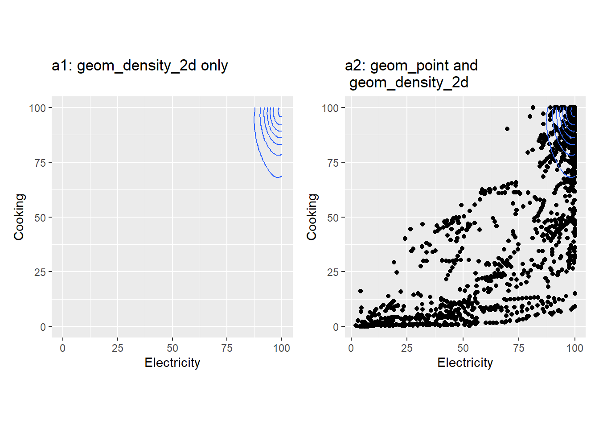
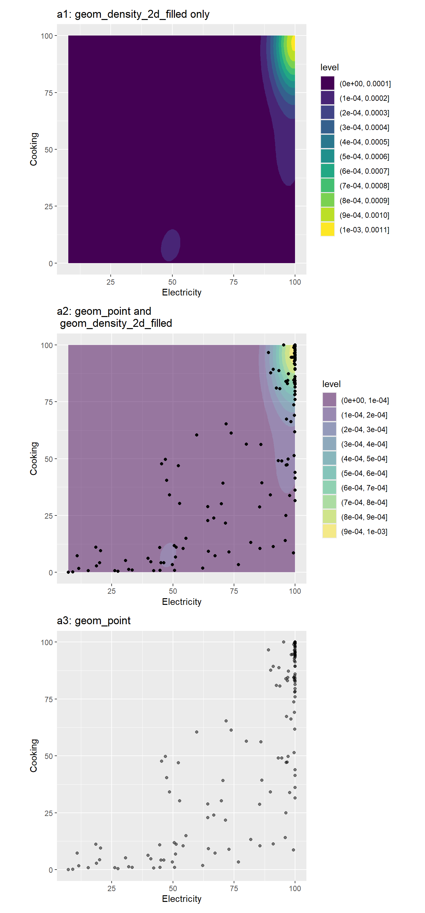
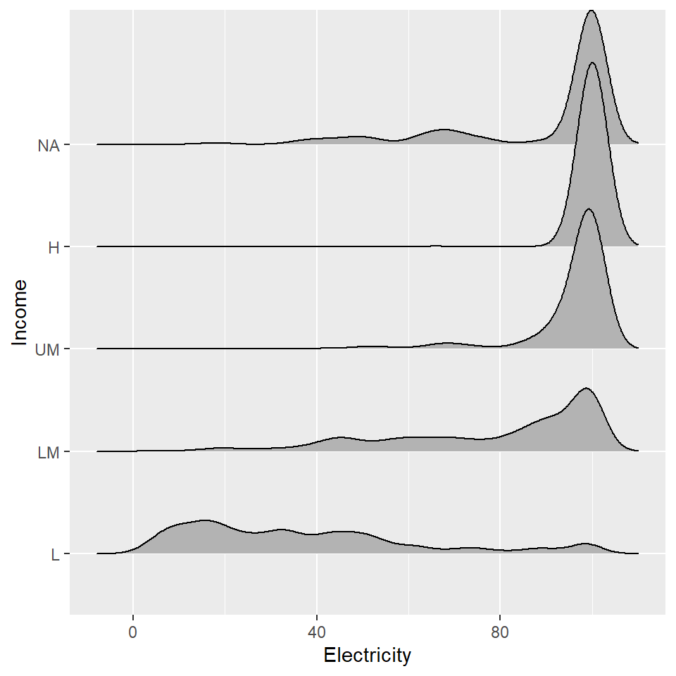
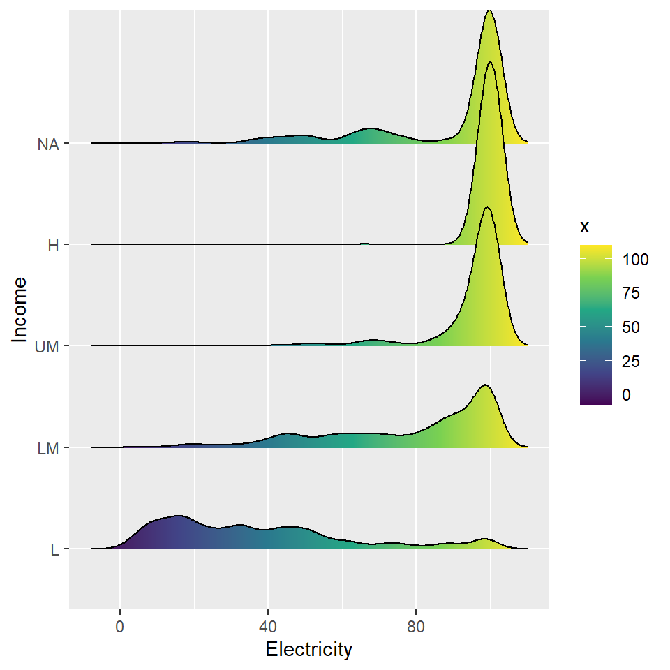
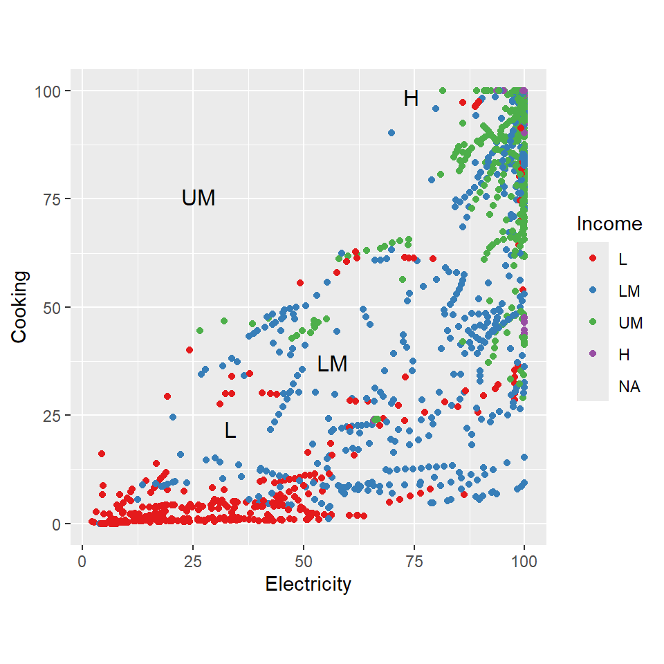
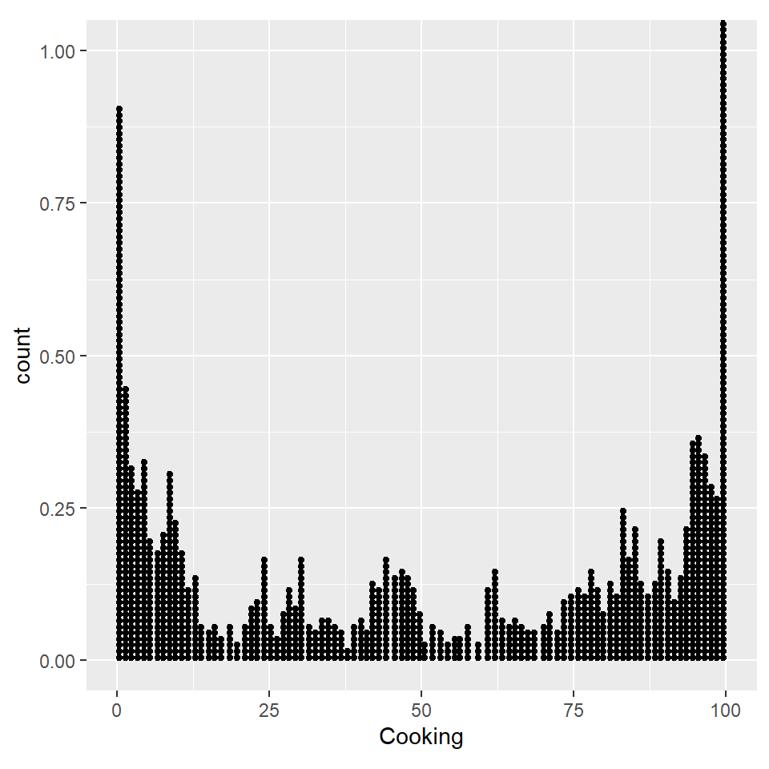
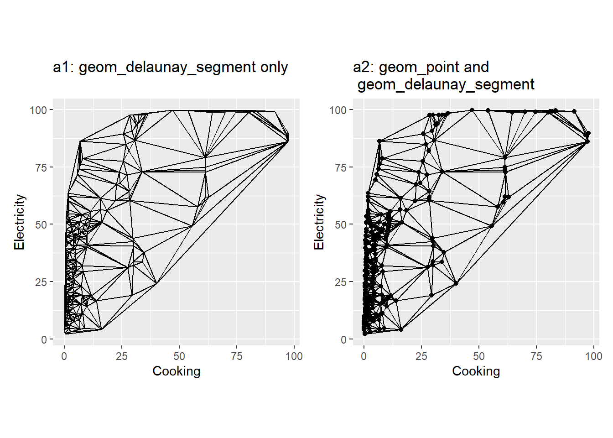
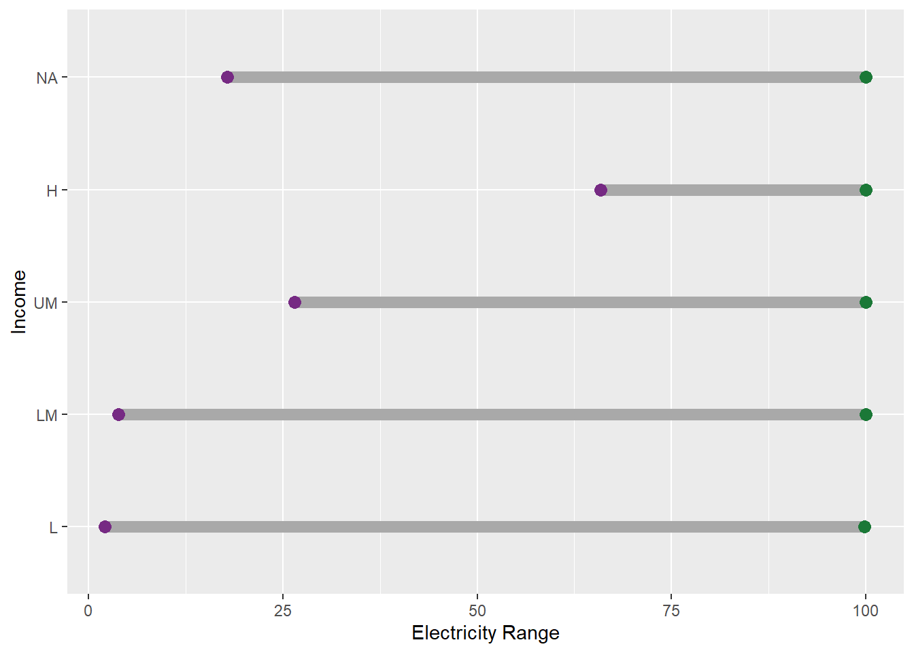

worldbankdata |>
ggplot(aes(x = Electricity)) + geom_density()6 geom_d
6.1 geom_density
6.1.1 Package
ggplot2 (Wickham 2016)
6.1.2 Description
Computes and draws kernel density estimation.
6.1.3 Understandable aesthetics
required aesthetics
x
y
optional aesthetics
alpha, colour, fill, group, linetype, linewidth, weight
6.1.4 The statistical transformation to use on the data for this layer
stat_density
6.1.5 See also
6.1.6 Example
6.2 geom_density_line
6.2.1 Package
ggridges (Wilke 2023)
6.2.2 Description
Draws a density plot same as geom_density. The difference is that the geom draws a ridgeline (line with filled area underneath).
6.2.3 Understandable aesthetics
required aesthetics
x
y
optional aesthetics
alpha, colour, fill, group, linetype, linewidth, weight
6.2.4 The statistical transformation to use on the data for this layer
stat_density
6.2.5 See also
6.2.6 Example
library(ggridges)
worldbankdata |>
ggplot(aes(x = Electricity)) +
geom_density_line()
6.3 geom_density_2d
6.3.1 Package
ggplot2 (Wickham 2016)
6.3.2 Description
Computes a 2D kernel density estimation using MASS::kde2d() and display the results with contours.
6.3.3 Understandable aesthetics
stat_density
required aesthetics
x
y
optional aesthetics
alpha, colour, group, linetype, linewidth
6.3.4 The statistical transformation to use on the data for this layer
stat_density
6.3.5 See also
6.3.6 Example
a1 <- worldbankdata |>
ggplot(aes(y = Cooking, x=Electricity)) +
geom_density_2d() +
xlim(0, 100) +
ylim(0, 100) +
theme(aspect.ratio = 1) +
labs(title = "a1: geom_density_2d only")
a2 <- worldbankdata |>
ggplot(aes(y = Cooking, x=Electricity)) +
geom_point() +
geom_density_2d() +
theme(aspect.ratio = 1) +
labs(title = "a2: geom_point and \n geom_density_2d")
a1|a2
6.4 geom_density_2d_filled
6.4.1 Package
ggplot2 (Wickham 2016)
6.4.2 Description
Computes a 2D kernel density estimation using MASS::kde2d() and display the results with filled contour bands.
6.4.3 Understandable aesthetics
required aesthetics
x
y
optional aesthetics
alpha, colour, group, linetype, linewidth, subgroup
6.4.4 The statistical transformation to use on the data for this layer
stat_density
6.4.5 See also
6.4.6 Example
a1 <- worldbankdata |>
filter(Year == "2021") |>
ggplot(aes(y = Cooking, x=Electricity)) +
geom_density_2d_filled() +
labs(title = "a1: geom_density_2d_filled only") +
theme( aspect.ratio = 1)
a2 <- worldbankdata |>
filter(Year == "2020") |>
ggplot(aes(y = Cooking, x=Electricity)) +
geom_density_2d_filled(alpha = 0.5) +
geom_point() +
labs(title = "a2: geom_point and \n geom_density_2d_filled") +
theme( aspect.ratio = 1)
a3 <- worldbankdata |>
filter(Year == "2020") |>
ggplot(aes(y = Cooking, x=Electricity)) +
geom_point(alpha=0.5) +
labs(title = "a3: geom_point") +
theme(aspect.ratio = 1)
a1 / a2 / a3
6.5 geom_density_ridges
6.5.1 Package
ggridges (Wilke 2023)
6.5.2 Description
Arranges multiple density plots in a staggered fashion.
6.5.3 Understandable aesthetics
required aesthetics
x
y
optional aesthetics
colour, fill, group, height, alpha, linetype, linewidth, scale, rel_min_height
6.5.4 The statistical transformation to use on the data for this layer
density_ridges
6.5.5 See also
6.5.6 Example
library(ggridges)
worldbankdata |>
ggplot(aes(y = Income, x=Electricity)) +
geom_density_ridges() 
6.6 geom_density_ridges_gradient
6.6.1 Package
ggridges (Wilke 2023)
6.6.2 Description
Arranges multiple density plots in a staggered fashion.
6.6.3 Understandable aesthetics
required aesthetics
x
y
optional aesthetics
colour, fill, group, height, alpha, linetype, linewidth, scale, rel_min_height
6.6.4 The statistical transformation to use on the data for this layer
density_ridges
6.6.5 See also
6.6.6 Example
library(ggridges)
worldbankdata |>
ggplot(aes(y = Income, x=Electricity, fill=stat(x))) +
geom_density_ridges_gradient() +
scale_fill_viridis_c()
6.7 geom_dl
6.7.1 Package
directlabels (Hocking 2023)
6.7.2 Description
Display direct labels on the plot.
6.7.3 Understandable aesthetics
layer
6.7.4 The statistical transformation to use on the data for this layer
stat_identity
6.7.5 See also
6.7.6 Example
library(directlabels)
a1 <- worldbankdata |>
ggplot(aes(y = Cooking, x=Electricity)) +
geom_point(aes(col=Income)) +
theme(aspect.ratio = 1) +
scale_color_brewer(palette = "Set1")
a1 +
geom_dl(aes(label=Income), method="smart.grid")+
scale_shape_manual(values=c(H = 1,
UM = 6,
L = 3,
LM = 2),
guide="none")
6.8 geom_dotplot
6.8.1 Package
ggplot2 (Wickham 2016)
6.8.2 Description
Create dotplot.
6.8.3 Understandable aesthetics
stat_density
required aesthetics
x or y
optional aesthetics
alpha, colour, fill , group, linetype, stroke
6.8.4 The statistical transformation to use on the data for this layer
stat_identity
6.8.5 See also
6.8.6 Example
worldbankdata |>
ggplot(aes(x=Cooking)) +
geom_dotplot(binwidth = 1) +
theme(legend.position="none", aspect.ratio = 1)
6.9 geom_delaunay_tile
6.9.1 Package
ggplot2 (Pedersen 2022)
6.9.2 Description
Display voronoi tesselation and delaunay triangulation.
6.9.3 Understandable aesthetics
required aesthetics
x or y
optional aesthetics
alpha, colour, fill , linetype, size
6.9.4 The statistical transformation to use on the data for this layer
delaunay_tile
6.9.5 See also
6.9.6 Example
library(ggforce)
library(deldir) #to calculate delaunay triangulation
a1 <- worldbankdata |>
filter(Income == "L") |>
ggplot(aes(x=Cooking, y=Electricity)) +
geom_delaunay_tile(alpha=0.5) +
labs(title = "a1: geom_delaunay_tile only") +
theme(aspect.ratio = 1)
a2 <- worldbankdata |>
filter(Income == "L") |>
ggplot(aes(x=Cooking, y=Electricity)) +
geom_point() +
geom_delaunay_tile(alpha=0.5) +
labs(title = "a2: geom_point and \n geom_delaunay_tile") +
theme(aspect.ratio = 1)
a1 | a26.10 geom_delaunay_segment
6.10.1 Package
ggplot2 (Pedersen 2022)
6.10.2 Description
Display voronoi tesselation and delaunay triangulation.
6.10.3 Understandable aesthetics
required aesthetics
x or y
optional aesthetics
alpha, colour, fill , linetype, size
6.10.4 The statistical transformation to use on the data for this layer
delaunay_segment
6.10.5 See also
6.10.6 Example
library(ggforce)
library(deldir) #to calculate delaunay triangulation
a1 <- worldbankdata |>
filter(Income == "L") |>
ggplot(aes(x=Cooking, y=Electricity)) +
geom_delaunay_segment() +
theme(aspect.ratio = 1) +
labs(title = "a1: geom_delaunay_segment only")
a2 <- worldbankdata |>
filter(Income == "L") |>
ggplot(aes(x=Cooking, y=Electricity)) +
geom_point() +
geom_delaunay_segment() +
theme(aspect.ratio = 1) +
labs(title = "a2: geom_point and \n geom_delaunay_segment")
a1 | a2
6.11 geom_delaunay_segment2
6.11.1 Package
ggplot2 (Pedersen 2022)
6.11.2 Description
Display voronoi tesselation and delaunay triangulation.
6.11.3 Understandable aesthetics
required aesthetics
x or y
optional aesthetics
alpha, colour, fill , linetype, size
6.11.4 The statistical transformation to use on the data for this layer
delaunay_segment2
6.11.5 See also
6.11.6 Example
library(ggforce)
library(deldir) #to calculate delaunay triangulation
a1 <- worldbankdata |>
filter(Income == "L") |>
ggplot(aes(x=Cooking, y=Electricity)) +
geom_delaunay_segment2() +
theme(aspect.ratio = 1) +
labs(title = "a1: geom_delaunay_segment2 only")
a2 <- worldbankdata |>
filter(Income == "L") |>
ggplot(aes(x=Cooking, y=Electricity)) +
geom_point() +
geom_delaunay_segment2() +
theme(aspect.ratio = 1) +
labs(title = "a2: geom_point and \n geom_delaunay_segment2")
a1 | a26.12 geom_dumbbell
6.12.1 Package
6.12.2 Description
Create dumbbell charts.
6.12.3 Understandable aesthetics
required aesthetics
x, y, xend, yend
optional aesthetics
alpha, colour, group, linetype, size
6.12.4 The statistical transformation to use on the data for this layer
6.12.5 See also
6.12.6 Example
library(ggalt)
df <- worldbankdata |>
group_by(Income) |>
summarise(min = min(Electricity, na.rm=TRUE), max = max(Electricity, na.rm=TRUE))
df# A tibble: 5 3
Income min max
<fct> <dbl> <dbl>
1 L 2.11 99.8
2 LM 3.81 100
3 UM 26.5 100
4 H 65.9 100
5 <NA> 17.8 100 ggplot(df, aes(y=Income, x=min, xend=max)) +
xlab("Electricity Range") +
geom_dumbbell(color = "darkgray", # Color of the line between min and max
size = 3, # Line width
dot_guide = FALSE, # Whether to add a guide from origin to X or not
size_x = 3, # Size of the X point
size_xend = 3, # Size of the X end point
colour_x = "#762a83", # Color of the X point
colour_xend = "#1b7837") # Color of the X end point 